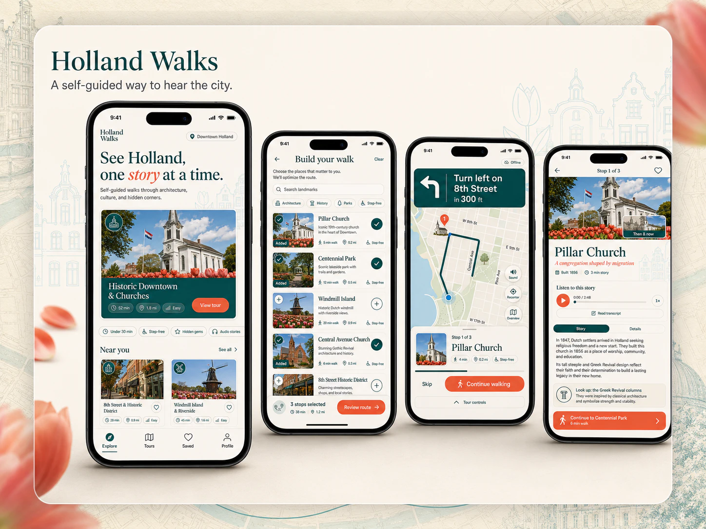
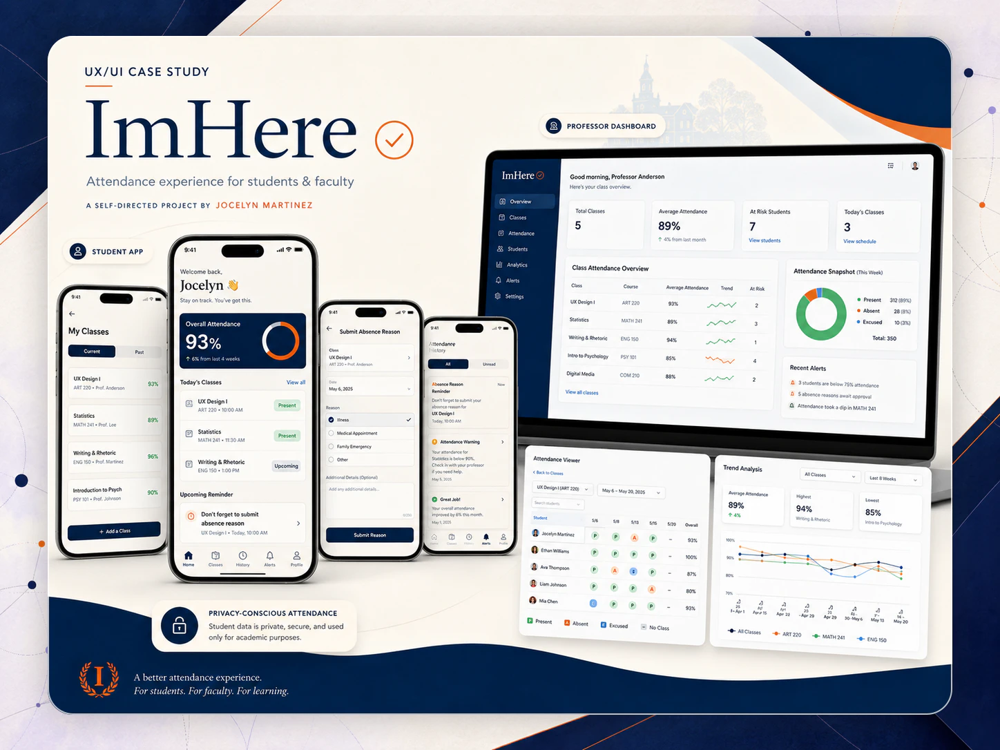
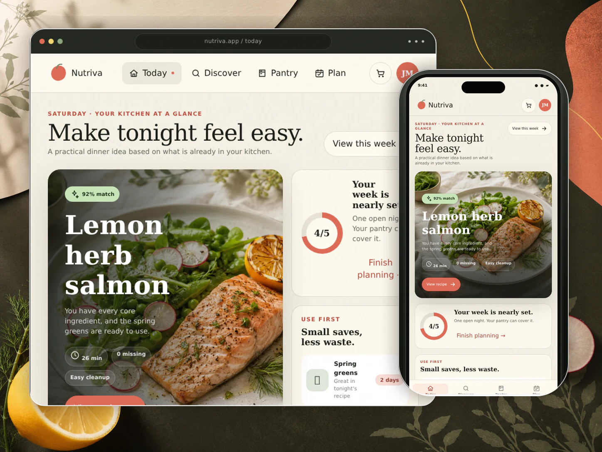
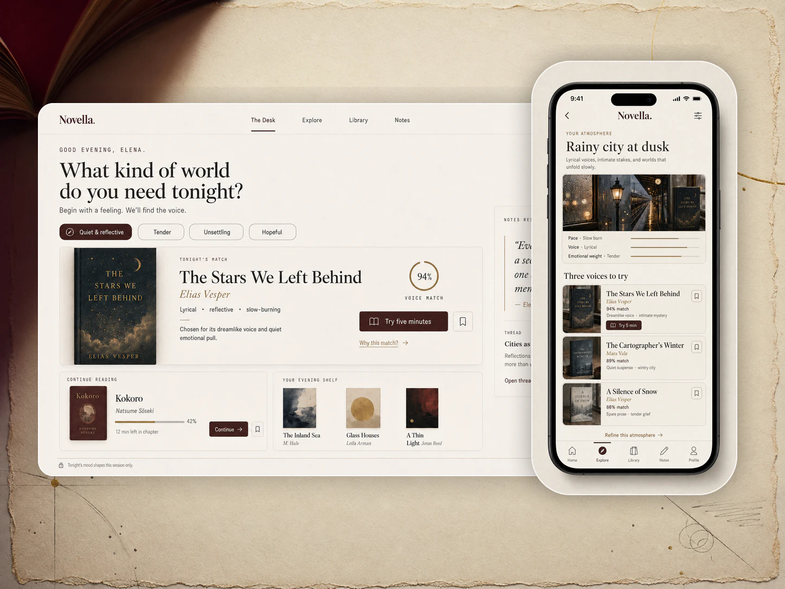
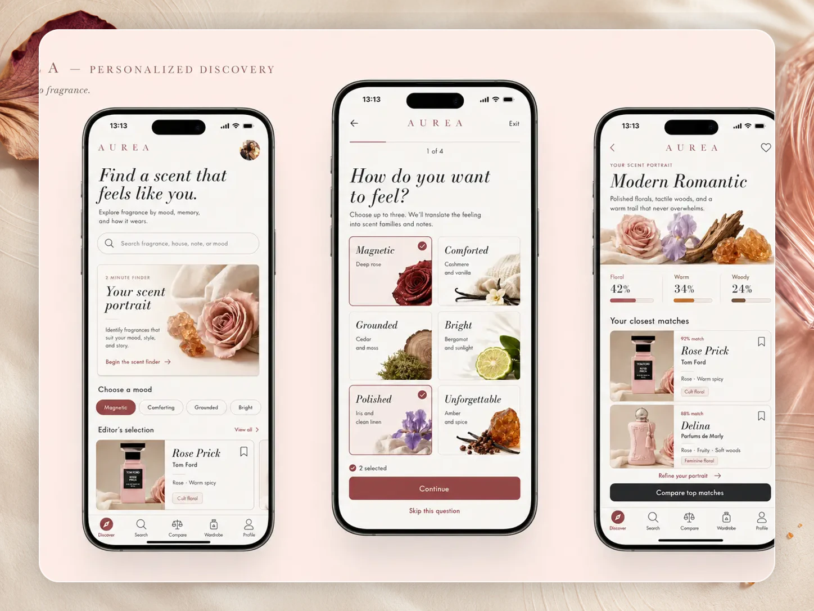

Product framing
Translate research, stakeholder input, and constraints into priorities, design principles, and a tractable scope.
Product designer · Interaction systems · Front-end fluent
I work across research synthesis, product framing, interaction design, visual systems, and front-end prototyping—connecting what people need with what teams can realistically build.
Product thinking made visible through scope, states, and working behavior.
Participants and collaborators represented in the Holland project synthesis.
Student and faculty experiences designed as one attendance ecosystem.
Working prototypes used to explore state, logic, and responsive behavior.
The value I bring is range with connective tissue: I can frame what needs to be solved, model how it should behave, and carry the idea into a responsive, high-fidelity prototype.
I am most useful where a product has multiple audiences, unclear rules, or dense information. I turn those conditions into task models, role-aware flows, content structures, and interface patterns.
I document what is known, what is assumed, and what still needs validation so collaborators can make decisions without pretending certainty.
Translate research, stakeholder input, and constraints into priorities, design principles, and a tractable scope.
Model roles, states, permissions, feedback, edge cases, and recovery paths—not only the ideal journey.
Build responsive, accessible visual systems and high-fidelity prototypes that support implementation and design QA.
Each case study clarifies my role, the system I designed, the evidence behind key decisions, and the next risk I would validate. Together, the work spans real stakeholder collaboration, multi-role workflows, and stateful coded prototypes.

A responsive public-history product that helps visitors choose and follow a walking tour while giving collaborators a reusable model for publishing local stories.

A role-based attendance system designed around quick student check-in, manageable faculty review, visible system status, and careful location-data boundaries.
These projects show how I define a product hypothesis, model behavior, and use visual direction to support a specific kind of decision.

A stateful meal-planning experience connecting pantry inventory, recipe matching, weekly planning, and grocery decisions.
Prototype depthStateful pantry, planning, grocery, and recipe flows across responsive web and iPhone views.

A calmer literary-discovery experience that turns vague reading intent into a browsable path toward a confident choice.
Prototype depthA 10-screen app journey plus responsive web views exploring pacing, comparison, and progressive disclosure.

An editorial fragrance archive that makes an abstract sensory category easier to discover, compare, and collect.
System depthTen product moments spanning discovery, comparison, scent profiles, and a personal archive.
Concept work is presented as product hypotheses, not shipped outcomes. Each case study names what is working, what remains unvalidated, and what I would test next.
I use the lightest method that reduces uncertainty, make assumptions and tradeoffs visible, and keep a clear line from evidence to interface behavior.
Align on the audience, desired outcome, constraints, and core decision before making screens.
Map content, roles, flows, states, permissions, edge cases, and recovery across the system.
Choose fidelity based on risk, then iterate content, behavior, and the visual system together.
Test the riskiest moments, capture findings, document behavior, and support implementation and design QA.